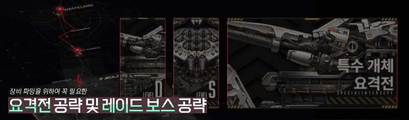
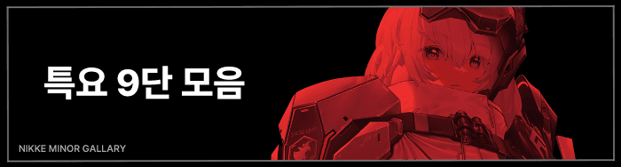
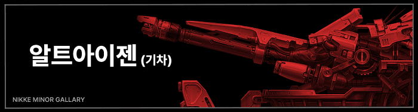
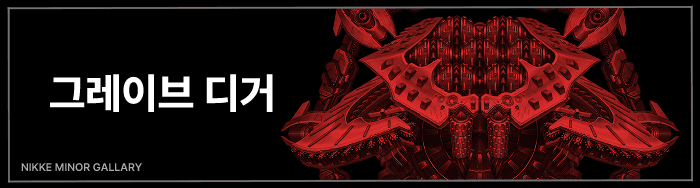
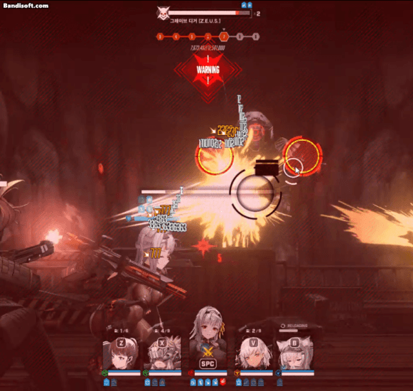
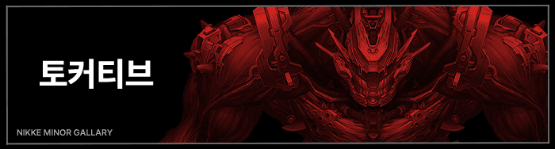
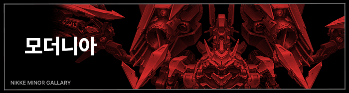

D요격, S요격, 특수 요격전, 레이드 보스 가이드를 통틀어 정리한 글입니다.
업데이트 내역: 뉴비용 모더니아, 그레이브 디거/챌린지 스톰브링어
삭제된 공략 및 링크 오류 / 신규 공략 등록 및 기존 공략 삭제 / 기타문의는 댓글로 남겨주면 처리할께
특요 순서
기차 → 디거 → 블랙스미스 → 토커티브 → 모더니아
리누블레모/리티나레모 이쪽 공략이 없는 이유는
저 조합일경우 여깄는 공략 아무거나 봐도 깰 수 있어서임
추후 업뎃하겠지만 진짜 아무거나 보고 기믹체크만 좀 하셈

(※ 9단부터 "커스텀 모듈" 이라는 재화가 확률적으로 드랍되니
웬만하면 9단을 목표로 하되, 힘들면 7단까지라도 목표를 할 것)
🌑
니청년들을 위한 디거 원버스트덱 추천 "티블레맥모"

※ 작성자 꿀팁
→ PC모드, 또는 폰 가로모드로 21:9 종횡비로 시작할 것
→ 시작하자마자 풀버스트로 맨우측 초록 미사일 포탑을 먼저 부술것
→ 기관총 터렛은 부수거나, 태보(30% 확률로 헛방쏨)하거나, 불굴로 버틸 것
▷ 사쿠라+루드밀라, 또는 노이즈 단독 태보로 기차 패턴 파훼가 가능
▷ 스트레스 받기 싫으면 레후, 티아나가, 누블랑 셋 중 하나가 뜰 때까지 유기....
🌑 [기차] "뉴비쟝들을 위한 기차 공략(레후 필수)" 기차 9단
레후만 있으면 뉴비도 깰 수 있는 공략이지만 스작 상태에 따라 클리어 여부는 달라질 수 있음🌑 [기차] 뉴비가 기차잡는 영상 ( 태블릿 )
🌑 [기차] 저스펙용 특요 기차 공략
🌑 [기차] "동크홍흑노" 뉴비용 20발 홍련/노오버 흑련 조합으로 기차 9단하기 (24.05.14)
🌑 [기차] 알트아이젠(기차) 코어 때리는 방법
🌑 [기차] 뉴비 기차 9단 클리어영상 (리타 루피 레드후드 모더니아 노이즈) (24.03.13)
🌑 [기차] 누블랑/도발과 날먹하기
🌑 [기차] 노이즈로 태보해서 9단 공략 TIP
🌑 [기차] 누블랑으로 기차 9단 공략
🌑 [기차] 사쿠라+루드밀라 조합

※ 작성자 꿀팁
→ PC모드일 경우 아래 "PC버전 사소한 팁"을 반드시 볼 것
→ 3페이즈 (7단) 이후 첫 저지 실패시 [관통딜]로 피격되어 무조건 죽으니 미리 버스트 조절을 할 것
→ 쿨감캐릭 필수, 웬만하면 화력형 샷건캐를 쓰는 것을 권장
(이왕이면 우월코드 화력형 샷건인 '슈가'를 추천)
🌑 [디거] "리블누레모" 순서로 디거 잡기
다 있는데 디거가 너무 힘든 뉴비를 위하여 링크하였음.
🌑 [디거] 갤에서 배운 그레이브 디거 꿀덱
🌑 [디거]
그레이브 디거 공략시 참고하면 좋을 내용
(24.04.25)
🌑 [디거]
(전투력 78916) 그레이브 디거 9단 "리누블슈모"
(24.04.25)
🌑 [디거] 뉴비는 꼭 버쿨감과 누아르를 넣자! (23.11.25)
🌑 [디거] 특요 디거 9단 팁 설명
짤팁) 디거 PC버전에서는 ESC 컨이 가능하다

※ 작성자 꿀팁
→ 힐러 필수, 광역기가 있으면 좋음
→ 힐러가 있는데 힐이 딸리면 "자칼" 채용
→ 코코볼은 태보가 가능해서 도발캐(ex. 티아, 노이즈)를 쓰면 편함
→ 코어는 자동으로 조준되지 않으니 이왕이면 명중률이 우수한 MG, 또는 폭발범위 증가가 있는 RL 니케를 쓸 것
🌑 [블스] 뉴비용) "페퍼 나가 볼륨 클루드 흑련(딜러진 대체 가능)"
🌑 [블스] 블랙스미스 관통 위치
🌑 [블스] 노이즈+리타 태보 TIP
🌑 [블스] 리타+힐러1+딜러3 조합 (ex. 리애홍프라, 리센홍헬모)
🌑 [블스] "리루홍모라" 조합 및 TIP

※ 작성자 꿀팁
→ 맨 첫번째 꿀밤은 반드시 스쿼드의 중앙 니케(3번 자리)를 먼저 때림
→ 토커티브는 코어를 부수면 즉사 핵펀치를 날리므로 코어를 부수지 말 것
→ 미사일은 니케의 체력에 상관없이 일정 횟수 이상 피격되면 즉시 사망하니 주의
→ 도로시 등 불렛타임이 있는 니케는 아래 "미사일 부수는 팁"을 반드시 참고
→ 토커티브 한정으로 라플라스가 딜을 잘 넣음, 이는 아래 관련 게시글 참고
🌑 [토커] 불렛타임으로 미사일 부수는 팁
🌑 [토커] 토커티브 코어 풀히트 위치
🌑 [토커] "라플라스"로 특요 토커티브 9단 따기
🌑 [토커]
리센홍 없이 9단 공략 (ex. N폴라아모, N폴앤라모)

※ 작성자 꿀팁
→ 시작하자마자 코어를 부술 것, 날개는 절대로 부수지 말 것
→ 만약 코어를 못 부수겠으면 전체엄폐해서 레이저 버티고 다시 코어 때리기
→ 코코볼은 태보로 회피할 것, 이 과정에서 도발캐를 사용하면 9단이 편해짐
→ 딱히 공략이 필요없는 보스, 힐러도 없어도 됨
🌑 [모더] 특요 9단 모더 공략
🌑 [모더] 모더니아 쉬운 도발컨 방법
🌑 [모더] "모더니아" 사소한 팁
🌑 [모더] 뉴비를 위한 특요 모더니아 기본팁 (24.04.16)
🌑 [모더] 뉴비를 위한 특요 모더니아 엄폐컨 쉽게 하기 (24.04.16)
🌑 [모더] 보스 레이저 스턴 100% 무시하는 법
해당 보스 이름으로 검색하셈
🌑 [마테리얼H] 마테리얼H 쉽게 깨는 법
🌑 [마테리얼H-철갑] 마테리얼H-철갑 패턴 기믹 파훼법 (24-38 BOSS)
🌑 [니힐리스타] 니힐리스타 브레스 기믹 파훼법
🌑 [마더웨일] 마더웨일 텔레포트 기믹 파훼법
🌑 [두리안] HARD 10-BOSS 두리안 기믹
🌑 [케투스/가오리] 16지 보스 가오리 기믹
🌑 [스톰브링어] 0우코 레드후드와 대여니케로 챌린지 스톰브링어 공략
🌑 [스톰브링어] 니청년에게 추천하는 챌린지 스톰브링어 조합 (노이즈+크라운)
🌑 [스톰브링어] ㄴ 추가 추천 조합(뉴비용 아니니까 뉴비는 안봐도 괜찮음)
🌑 [플레이트] 19지 보스 플레이트 기믹
🌑 [울트라]
26지 보스 울트라 기믹
🌑 [오벨리스크] 오벨리스크 명중률 감소 효과 움짤
🌑 [헤비메탈] "헤비메탈" 로드급 랩쳐 스킬 분석
[기록보관소]
이하 공략들은 이제 너무 오래된 구식공략이거나 현 메타에 맞지않는 공략들을 기록용으로 보관한것임